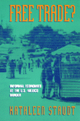

<body bgcolor="#FFFFFF" text="#000000" link="#0000FF" vlink="#CC0000" alink="#CC0000"><center><hr width="350" size="1" align="center" noshade>How petty regulations feed grand global hegemonies that cheapen labor<hr width="350" size="1" align="center" noshade><p><a href="https://cdcshoppingcart.uchicago.edu/Cart/ChicagoBook.aspx?ISBN=9781566395670&&PRESS=temple" target="_top">Buy this book!</a> | <a href="https://cdcshoppingcart.uchicago.edu/Cart/Cart.aspx?PRESS=temple" target="_top">View Cart</a> | <a href="https://cdcshoppingcart.uchicago.edu/Cart/Cart.aspx?PRESS=temple" target="_top">Check Out</a></p><p></p></center><!--none//--><h1>Free Trade?</h1>
<H2>Informal Economies at the U.S.-Mexico Border</H2>
<h3>Kathleen Staudt</h3>
<P>cloth 1-56639-567-4 $79.50, Jan 98, <FONT COLOR=#990033>Out of Stock Unavailable</FONT>
<br>paper 1-56639-568-2 $31.95, Jan 98, <FONT COLOR=#990033>Available</FONT>
<br>Electronic Book 1-43990-547-9 $30.95 <FONT COLOR=#990033>Out of Stock Unavailable</FONT>
<BR> 256 pp
5.5x8.25
6&nbsp;tables 5&nbsp;map(s) 16&nbsp;figures 14&nbsp;halftones
</P><p>In the aspiring global cities of Ciudad Ju&aacute;rez and El Paso, people generate income and develop their housing informally on both sides of the U.S.-Mexico border. Staudt analyzes women and men in low-and middle-income neighborhoods in the core and in the old and new peripheries of two cities that straddle an international border.
<p>Residents counter national and international influences to build shelter and incomes, albeit meager. But the political machinery of both the U.S. and Mexico constrains the ability of these quintessential free traders to build political communities and organize around self-sufficient work and housing in visible ways.
<p>Experiences at the border, along a central gateway for capital, job, and labor movements, offer insights to readers as the globalized economy spreads and engulfs the heartlands of both the U.S. and Mexico. People's everyday victories in countering petty regulations can counter or feed the grand global hegemonies.
<BR>&nbsp;<h2>Excerpt</h2><P>Excerpt available at <a href="http://www.temple.edu/tempress">www.temple.edu/tempress</a></p>
<BR>&nbsp;<h2>Reviews</h2>
<p><I>"This book makes a solid contribution to a variety of literatures.... In political science literature, which has not paid much attention to informality, Kathy Staudt takes an important step forward toward adequate theorization of informal activities. Scholars in economics and sociology, where most of the theorizing of informality has occurred, will benefit from an analysis which looks beyond the social and economic aspects of informality on which they typically concentrate. Her analysis contributes to the border studies literature, particularly because it assesses informality and politics in the comparative context of both El Paso and Juárez. Yet its findings have important implications not just for the Mexican interior, where informality is prevalent and well-documented, but for the rest of the United States, where many of the documented processes are no doubt occurring as a global restructuring runs it course. For this reason, the book is a model for parallel studies in other non-border contexts."</I>
<br>&#151<b>Susan Tiano</b>, University of New Mexico
<p><i>"...applies a Gramscian political framework to understand the informal economy as a set of counterhegemonic practices the poor develop."</i>
<br>&#151<b><i><a href="http://www.findarticles.com/p/articles/mi_qa3688/is_200007/ai_n8892489" target="new">Journal of Interamerican Studies and World Affairs</a></i></b>
<BR>&nbsp;<h2>Contents</h2><P>
<p>List of Illustrations
<br>Preface and Acknowledgments
<br>1. Introduction: Culture, Politics, and Informal Economies at the U.S.-Mexico Border
<br>2. Gazing at Space: Borders, Institutions, Informality, and Political Community
<br>3. Contextualizing a Border City: Juárez-El Paso
<br>4. Finding and Making Work Within and Across Borders: The Informal Underbelly at the Border
<br>5. Moving Within and Across Borders for Land and Shelter
<br>6. Getting Public Services: Reflections on Political Community in the Urban Peripheries
<br>7. Engaging Political Community: Surveillance, Public Accountability, and Seeds across the Border
<br>8. Moving from the Border to the Mainstream: Concluding Implications
<br>Notes
<br>Index
</P><BR>&nbsp;<H2>About the Author(s)</H2>
<table><tr><td valign="top"><img src="/tempress/authors/1334_au.gif" height="90" width="75"></td><td width="100%" valign="middle"><p><B>Kathleen Staudt</B> is Professor of Political Science at the University of Texas, El Paso. She is the author or editor of <i>Political Science and Feminisms: Integration or Transformation?</i> (with William Weaver), <i>Managing Development</i>, and <i><a href="639_reg.html" target="_top">Women, International Development, and Politics: The Bureaucratic Mire</a></i>, first and second editions. (Temple).</P></td></tr></table>
<BR><H2>Subject Categories</H2>
<p><A HREF="/tempress/political.html" TARGET="_top">Political Science and Public Policy</a>
<BR><A HREF="/tempress/latin.html" TARGET="_top">Latin American/Caribbean Studies</a>
</p>
<p align="center"><a href="https://cdcshoppingcart.uchicago.edu/Cart/ChicagoBook.aspx?ISBN=9781566395670&&PRESS=temple" target="_top">Buy this book!</a> | <a href="https://cdcshoppingcart.uchicago.edu/Cart/Cart.aspx?PRESS=temple" target="_top">View Cart</a> | <a href="https://cdcshoppingcart.uchicago.edu/Cart/Cart.aspx?PRESS=temple" target="_top">Check Out</a></p><p><font face="Arial" size="1"><a href="copyright.html" onMouseOver="window.status='Web Copyright Policy';return true;" onMouseOut="window.status=''" title="Web Copyright Policy">&copy;</a> 2015 <a href="http://www.temple.edu" target="new" onMouseOver="window.status='Link to Temple University home page';return true;" onMouseOut="window.status=''" title="Link to Temple University home page">Temple University</a>. All Rights Reserved. http://www.temple.edu/tempress/titles/1334_reg.html</font></p>